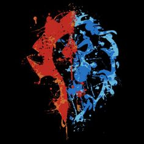
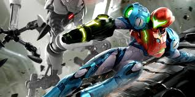

World of Warcraft
It all started when I was 14, It was mid 2006. My sisters boyfriend was playing a warrior in the battleground Alterac Valley. "pwn noobs" was all the rage back then. He kept saying it as body fell to the floor and green combat test floated all over on the screen as he was being supported. Couple weeks later I found myself sharing an account with my sister and taking up most of the playtime as you could only have one active character online at one time.
I had no idea what an MMO was, but I found out how enjoyable it was and got my own account when The burning crusade come out in 2007. All I wanted to do was play. I learned of other friends playing it and we banded together with server transfers and skype calls. The game soaked hours of my time but I still managed to balance school and work as I continued to play throughout all the years. I took breaks on expansions that didnt really captivate the TBC and WOTLK expansion greatness. And yet, I still have close to two years of time played in the past 17 years, although thats really nothing when you compare it to some of the top streamers.
With the release of the classic servers I was able to enjoy the original release which became a bore as the classic series has progressed into the expansions I've already played. With Dragonflight on the horizon, I am craving to play again. Past systems in the game have really struggled to keep me wanting to play semi-hardcore as some of them have been grindy, time consuming or just plain boring and stupid. I will always love this game and play when I can have a commitment for 6 months to a year to enjoy a chunk of each realease. Playing competitively in arena or battling it out in mythic raids are some of the most challenging and entertainging objectives. Cool titles and mounts to show off your completions are all sweet to achieve.
Halo Franchise
Metroid Franchise
The Sound of E.M.M.I was one of the most gripping PVE adrenaline rushes. Not to mention warping in the portals of Metroid: Prime 3's Corruption into the dark side, the level of creative difficulty and boss fights. Sometimes It felt impossible to beat, thinking out side the box and creating a new plan was one of the thrills to every encounter.